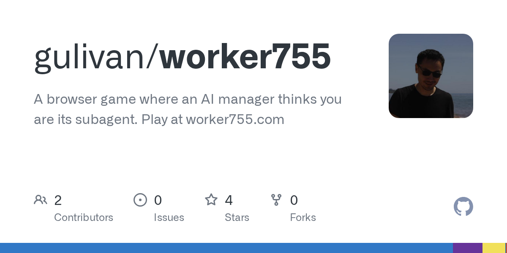
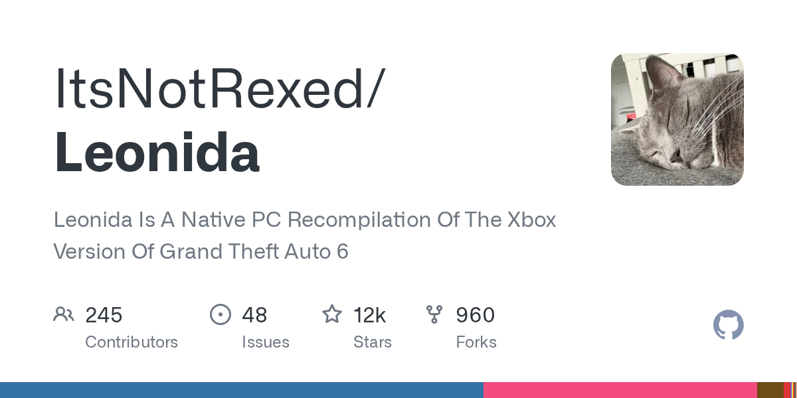
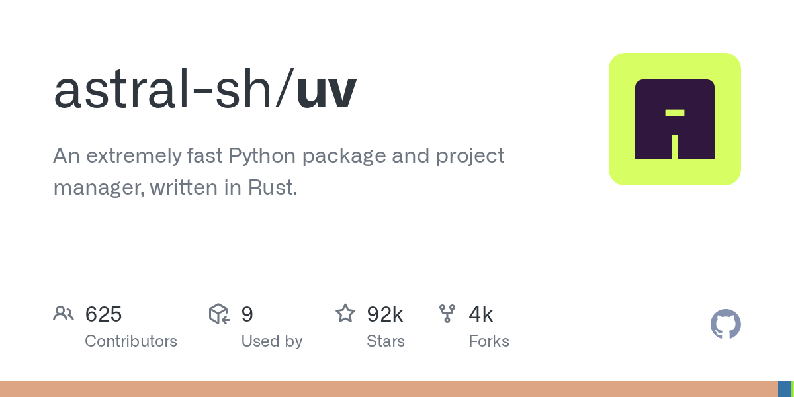
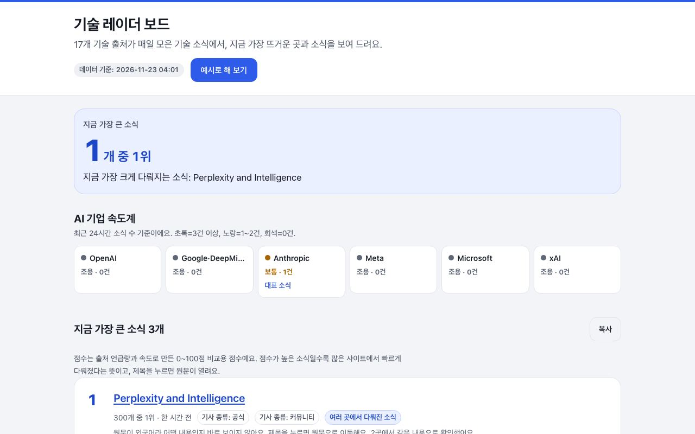

하루 한 모금,
오늘의 기술 소식
화제가 된 오픈소스와 AI 도구를 직접 받아서 돌려 보고, 1분 쇼츠와 글로 남깁니다. 모든 숫자에는 원문 근거를 답니다.

AI 상사가 나를 서브에이전트로 착각하는 게임 worker755, 설치 없이 돌려봤다
진짜 AI가 상사로 나오고, 그 AI가 나를 자기 일을 대신하는 서브에이전트로 착각하는 브라우저 게임 worker755를 받아 봤다. 설치는 하지 않았고, 의존성 없이 돌아가는 셸·SQL·음악 합성 부분만 직접 실행했다.
글 읽기 →최근 글
전체 보기 →
GTA VI, Xbox 패키지 직접 맥에서 살펴본 기록
GTA VI의 Xbox 전용 버전을 PC에서 네이티브로 돌리려는 오픈소스 재컴파일 프로젝트 Leonida를 받아서, 설치하지 않고 인터넷도 끊은 채로 살펴보고 실행해 봤다.

uv 0.13.9 소스를 받아 인터넷 없이 직접 돌려 본 기록
uv는 Rust로 만든 Python 패키지·프로젝트 관리자다. 소스를 받아서 설치도, 인터넷 연결도 없이 살펴보고 돌려 봤다. 확인한 건 의존성 없는 스크립트 실행과 Python 버전 관리까지다. 의존성이 있는 작업은 이 환경에서 해 보지 못했다.
pixelfx, 설치 없이 받아서 돌려 봤다
코드로 픽셀 효과를 만드는 오픈소스 라이브러리 pixelfx. 244개 효과를 스프라이트 시트(PNG)로 뽑아 주는 도구 체인이 실제로 돌아가는 것을 확인했다.
Pinky: AI에 제 폰을 맡기려면 — 설치 없이 받아서 돌려 본 기록
AI 에이전트가 내 실제 iPhone·Android폰을 대신 움직이게 하고, 결제 같은 위험한 단계는 내가 클릭으로 승인하게 해 주는 오픈소스 도구 "Pinky". Go로 짠 데스크톱 앱에 폰 전용 동반 앱이 붙는 구조다. 소스를 내려받아 실행할 수 있는 부분만 직접 …
Claude-BugHunter 직접 돌려보기 — Claude Code를 버그헌터처럼 만드는 오픈소스
버그헌터가 쌓아 온 스킬 83개와 검증 도구 묶음을 설치 없이 받아 실제로 돌려 봤다. 직접 재 보니 "7-Question 검증 게이트"는 결국 문구를 검색하는 수준에 그친다.
앱 실험실
앱 18개 전체 보기 →
기술 레이더 보드
17개 기술 출처가 매일 수집한 기술 소식 데이터를 받아, 지금 가장 큰 소식 3개와 점수·최신순 소식 목록을 대시보드에서 보여주는 앱입니다.
앱 써 보기 →26개 모델
맥에서 직접 잰 로컬 AI
내 맥에서 어떤 AI 모델이 돌아갈까? 48GB 맥에서 인기 로컬 모델 26개를 직접 돌려 답 쓰는 속도·메모리·한국어 점수·도구 호출·코딩을 쟀습니다. 같은 기준으로 비교할 수 있게 정리했어요.
실측표 보기 →커밋 한 모금
기술 소식. 오늘 뜨는 오픈소스·AI 모델을 1분 안에. 원문 화면과 직접 돌려 본 결과까지.
영상 보기 →실험 한입
생활 실험. 궁금한 걸 AI 3개한테 물어보고, 정답은 공개 데이터로 직접 계산해 확인합니다.
영상 보기 →